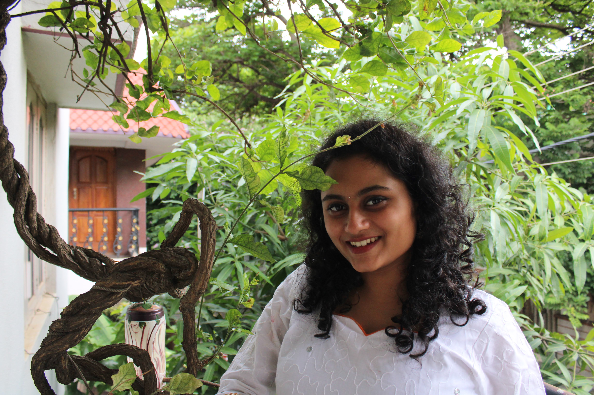
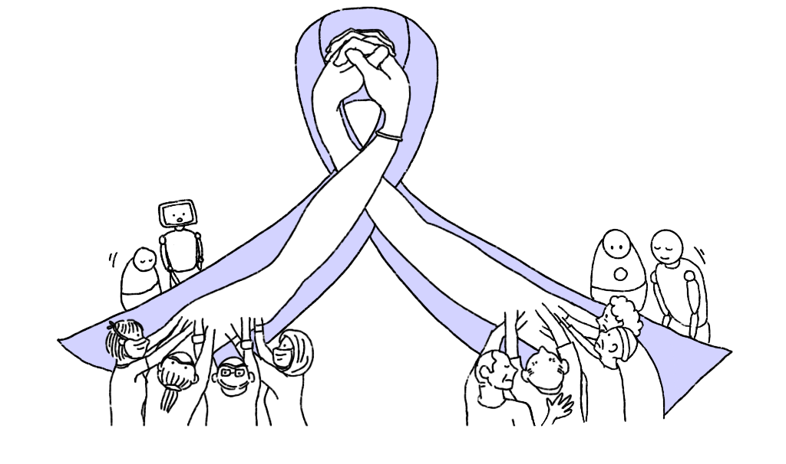
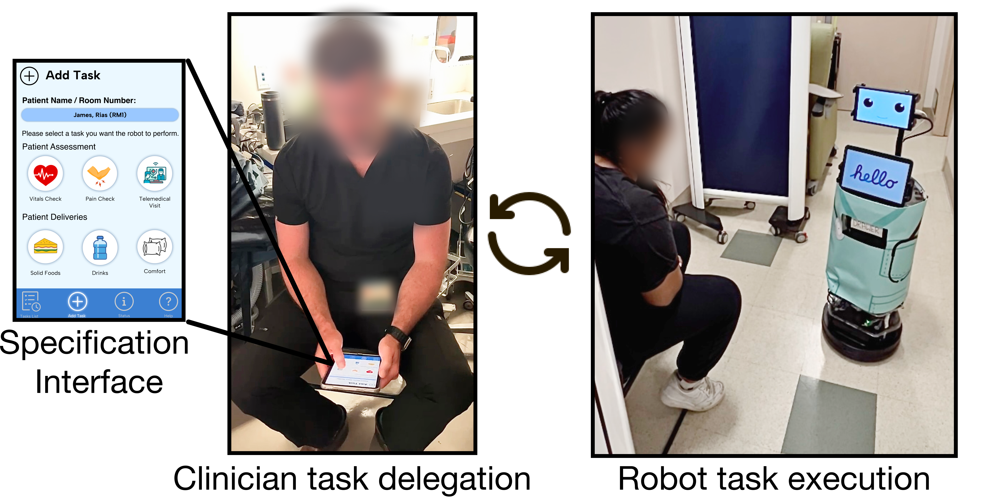
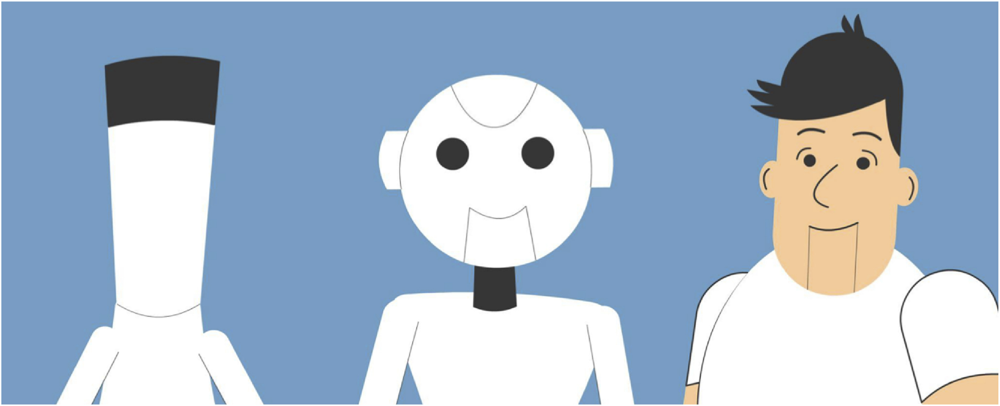

|
Sandhya Jayaraman
I am a PhD Candidate advised by Dr. Laurel Riek at the Healthcare Robotics Lab at UC San Diego.
My research takes a care ethics centered approach to the design, development, and deployment of robots for acute care. I closely work with disabled communities, patient populations,
and inter-professional clinicians, centering their expertise and lived experiences in shaping technologies for acute care. I am also interested in the application of formal methods
towards safe, and privacy-aware implementations of such robots.
Email /
CV /
Bio /
Scholar /
Github
|

|
Research
My research explores the care-ful contextualization, and design of robots for acute care. My projects span a range of topics in Human-robot interaction (HRI) situated in acute care, including privacy-sensitive robotics, clinically assistive robots, care ethics, and formal methods.
|
|

|
Designing care-fully: Robots for acute cancer care
Sandhya Jayaraman, Pratyusha Ghosh, Soyon Kim, Soham Satyadharma, Angelique Taylor, Christopher Coyne, and Laurel D. Riek.
HRI '26: Proceedings of the 21st ACM/IEEE International Conference on Human-Robot Interaction, 2026 Best paper honorable mention
In this project, we explored the design space of robots for acute cancer care. Our results revealed robots can be uniquely positioned to amplify compassion in deeply human care relationships. Our work suggests new ways for future robots to meaningfully support relational care practices.
|
|

|
CAR-EM: A Synthesis-Based Clinically Assistive RobotSystem for Emergency Medicine
Sandhya Jayaraman, Andrew Violette, U Lam Lou, Sruti Mani, Divya Prakash, Leslie Oyama, Christopher Coyne, Hadas Kress-Gazit, and Laurel D. Riek.
ACM Transactions on Human-Robot Interaction, 2026
We collaborated with inter-professional Emergency Department (ED) clinicians to contextualize 6 tasks appropriate for clinically assistive robots (CARs) to support in ED. We applied formal methods to develop a system called CAR-EM that aims to align with clinicians' preferences for 1) a sense of status about CARs, and 2) CARs' failure feedback. We ran a feasibility study of CAR-EM in two EDs. Clinicians said our system was easy to use, and particularly helpul in offloading busywork.
|
|

|
Privacy and utility perceptions of social robots in healthcare
Sandhya Jayaraman, Elizabeth K. Phillips, Daisy Church, and Laurel D. Riek.
Computers in Human Behavior: Artificial Humans, 2024
In this project, we sought to explore peoples' perceptions of privacy and utility of healthcare robots. We developed animated design fiction prompts to ground participants in envisioning future healthcare robots, and potential (multi-dimensional) privacy violations such robots might perpetuate. 239 participants viewed the prompts and answered surveys. Our results revealed the context of care delivery, coupled with the robot's tasks are a key determinant of peoples' perceptions of privacy of healthcare robots.
|
|
Workshops and Short Contributions
Organized
Robots for Care: Exploring Downstream Socio-ethical Effects and Upstream Interventions, HRI Companion '26: Companion Proceedings of the 21st ACM/IEEE International Conference on Human-Robot Interaction, 2026
Papers
What a healthcare worker wants, what a disabled person needs: Exploring stakeholder design tensions in assistive robotics, HRI 2024 Workshop on Assistive Applications, Accessibility, and Disability Ethics (A3DE), 2024
Social Robots in Healthcare: Characterizing Privacy Considerations, Companion of the 2024 ACM/IEEE International Conference on Human-Robot Interaction, 2024
|
|
Teaching
Teaching Assistant, Human-robot interaction, Spring 2024
Teaching Assistant, Discrete Mathematics, Winter and Spring 2022
Teaching Assistant, Design and Analysis of Algorithms (Graduate level), Fall 2021
Teaching Assistant, Design and Analysis of Algorithms (Upper-div undergrad), Winter 2021
|
|